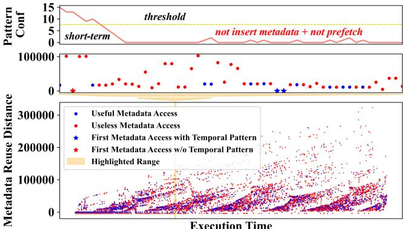
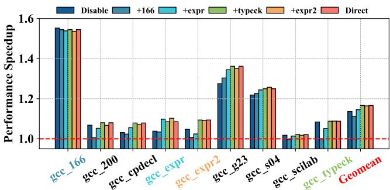

Profile-Guided Temporal Prefetching 通俗讲解¶
0. 整体创新点通俗解读¶
痛点直击 (The "Why")
- 传统的 硬件 temporal prefetcher（如 Triangel）在管理宝贵的 on-chip metadata table 时，就像一个近视的管家。它只能根据最近几次的访问情况（short-term data）来判断未来要不要存某个地址的关联信息。
- 这个做法在面对高度动态且不规则的内存访问模式时非常难受。比如，一个内存指令可能一会儿产生有用的预取（蓝色点），一会儿又产生没用的（红色点）。硬件管家看到连续几个没用的，就武断地认为“这家伙以后都没用了”，直接禁止为它存储任何元数据（如 Figure 1 所示）。
- 结果就是，它要么把宝贵的片上存储空间浪费在大量无用的元数据上，要么过于保守，把那些偶尔能产生巨大收益的“潜力股”元数据也一并过滤掉了，导致 prefetching coverage（覆盖率）严重不足。
通俗比方 (The Analogy)
- 想象一下，你是一个图书管理员（硬件预取器），负责决定哪些书（元数据）应该放在手边的快速书架（on-chip metadata table）上。你的规则是：如果一本书最近被借了但没人看（没命中），就把它扔回仓库。
- 现在有个教授（程序），他研究的课题很杂。有时候他借的书A立刻就看了（有用），有时候他又借了书B但放了几个月才看（暂时没用）。按照你的规则，书B很快就被扔回仓库了。等他几个月后真的需要书B时，你又得花大力气从仓库调回来，耽误事。
- Prophet的做法是，在学期开始前，先让这位教授做一次全面的开卷考试（Profiling），记录下他过去一整年里每本书最终有没有被用上、用了多少次。然后，你根据这份长期、全局的答卷（profile-guided hints），给每本书贴上一个标签：“高频核心”、“偶尔有用”、“基本不用”。这样，你在管理书架时就有了远见，知道即使某本书暂时没动，也值得留在手边。
关键一招 (The "How")
- 作者并没有抛弃现有的硬件预取器（如 Triangel），而是巧妙地在软件和硬件之间架起了一座桥。他们通过一个轻量级的 profile-guided 流程，为程序注入hints（提示），来指导硬件如何更聪明地管理元数据表。
- 具体来说，这个流程扭转了三个关键决策点：
- 插入策略 (Insertion Policy): 不再依赖硬件短视的
PatternConf，而是根据 Profiling 阶段统计出的每个内存指令（PC）的长期预取准确率。只有那些准确率极低（几乎从不产生有用预取）的指令，才会被完全禁止插入元数据。这避免了误伤“潜力股”。 - 替换策略 (Replacement Policy): 在元数据表满了需要替换时，硬件不再只看“谁最近没用过”（LRU-like），而是结合 Profiling 得到的预取准确率，给每个元数据项分配一个优先级。准确率低的项，即使刚被访问过，也会被优先踢出去，从而保证表里留下的都是“高价值”信息。
- 动态学习 (Learning): 最巧妙的是，Prophet不是一锤子买卖。它能通过
Step 3: Learning，将不同输入下的 Profiling 数据进行融合（如 Equation 4, 5），让一个优化后的二进制文件能够自适应地应对多种不同的运行场景，解决了传统 PGO 对输入敏感的致命弱点。
- 插入策略 (Insertion Policy): 不再依赖硬件短视的
- 整个方案极其轻量，因为它只依赖 PMU counters 而非庞大的 traces，并且通过
hint buffer或instruction prefix的方式将信息高效传递给硬件，几乎没有额外开销。

Figure 1: The bottom figure shows a metadata access pattern: 1) Blue/Red dots are metadata accesses that result in useful/useless prefetches; 2) Blue/Red stars represent first metadata access with/without temporal patterns. Their corresponding metadata should/should not be inserted in the metadata table. The top figure shows how Triangel [7] applies its PatternConf to the highlighted metadata access pattern.

Figure 5: Prophet process overview. Step1: Prophet leverages the PMU to gather counters related to the temporal prefetcher’s performance. Step2: Prophet analyzes the collected counters to generate hints and then injects hints into the original binaries. Step 3: Prophet samples and learns counters across different program inputs.

Figure 13: Prophet learns counters from gcc’s inputs.
1. Profile-Guided Insertion Policy (ELI5)¶
痛点直击
- 现有的硬件 temporal prefetcher（如 Triangel）在管理宝贵的 on-chip metadata table 时，面临着一个两难困境：要么“来者不拒”，把大量无效的地址关联信息塞进表里，迅速占满空间并挤掉有用的信息；要么“过度谨慎”，用一些基于短期历史的启发式规则（比如论文里的 PatternConf）错误地过滤掉那些其实能产生有用预取的请求。
- 这个问题的核心在于，硬件在运行时只能看到“过去一小段”的访问模式，无法预知未来。它就像一个近视眼，在嘈杂、动态变化的内存访问流中（如
Figure 1: The bottom figure shows a metadata access pattern: 1) Blue/Red dots are metadata accesses that result in useful/useless prefetches; 2) Blue/Red stars represent first metadata access with/without temporal patterns. Their corresponding metadata should/should not be inserted in the metadata table. The top figure shows how Triangel [7] applies its PatternConf to the highlighted metadata access pattern.
所示），很容易被一连串的“无用”访问（红点）误导，从而武断地认为后续所有访问都没价值，直接关上了插入新元数据的大门，错失了后面真正有用的“蓝星”。
通俗比方
- 想象你是一个图书管理员（metadata table），负责把读者（CPU）可能会再次借阅的书（内存地址）提前放到一个快速取书区。以前的硬件策略就像是根据读者最近几次借的书是不是畅销书，来决定是否把他这次借的书也放进去。但如果一个学者最近碰巧查了几本冷门资料（无用访问），系统就认为他以后查的都是垃圾，不再为他服务了。
- Profile-Guided Insertion Policy 的做法完全不同。它相当于在图书馆正式开放前，先做一次全面的“用户画像”调研（Profiling）。它发现，有些读者（特定的 PC, Program Counter）无论什么时候来，借的书几乎从来不会被再次借阅（prefetching accuracy 极低）。对于这类“一次性”读者，干脆就别浪费快速取书区的空间了。这个结论不是临时判断的，而是基于长期、全面的数据得出的“铁律”。
关键一招
- 作者没有试图在硬件里设计更复杂的实时决策逻辑，而是巧妙地将决策过程前置到了软件编译/优化阶段，并通过一个极简的 hint 机制与硬件通信。
- 具体流程是：
- 离线分析：通过 PMU counters（特别是
L2_Prefetch_Useful和L2_Prefetch_Issue）精确计算出每个内存加载指令（PC）在整个程序运行周期内的平均预取准确率。 - 设定阈值：定义一个极低的阈值（
ACC_THRESHOLD）。任何准确率低于此阈值的PC，都被判定为“几乎从不产生有用预取”。 - 注入Hint：将这个二元决策（“过滤”或“不过滤”）编码成一个 1-bit hint，并通过 hint buffer 或 instruction prefix 的方式，把这个hint“贴”到对应的内存指令上。
- 硬件执行：当程序运行时，硬件prefetcher在处理一个内存请求时，只需检查这个附带的1-bit hint。如果是“过滤”信号，就直接跳过，不去训练prefetcher也不插入metadata。
- 离线分析：通过 PMU counters（特别是
- 这一招的精妙之处在于，它用一次性的、轻量级的离线 profiling（只用计数器，不用沉重的trace），换取了运行时对metadata table极其精准的源头过滤，从根本上解决了硬件因“目光短浅”而导致的误判问题。
2. Profile-Guided Replacement Policy (ELI5)¶
痛点直击 (The "Why")
- 传统的硬件 temporal prefetcher（如 Triangel）在管理 metadata table（元数据表）时，其 replacement policy（替换策略）只关心一个事：这个元数据条目未来还会不会被用到？它用 reuse distance（重用距离）之类的指标来预测。
- 这个思路在理想情况下没问题，但现实很骨感。论文指出，元数据访问模式极其“动态且方差巨大”（highly variable with large reuse distance variance）。一个条目可能很久不用，但下次用就能带来一次非常关键的预取；反之，一个频繁命中的条目，可能预取的都是些没用的数据，白白浪费带宽。
- 所以，传统方法的核心痛点是：它只优化了 metadata table 的命中率，却完全忽略了命中之后的“价值”。它把所有命中一视同仁，导致宝贵的片上存储空间被那些“命中了也没用”的垃圾元数据占据，而真正能带来性能提升的高价值元数据反而可能被挤出去。
通俗比方 (The Analogy)
- 想象你是一个图书管理员（replacement policy），负责管理一个容量有限的畅销书架（metadata table）。
- 旧的方法（如 Hawkeye, SRRIP）就像是根据“过去一个月借阅次数”来决定哪些书留下，哪些书退回仓库。这看起来很合理，对吧？
- 但现在问题来了：有些书（比如《如何修理水龙头》）被借了很多次，但每次借的人都只是随便翻翻，根本没修好自家的水龙头（useless prefetch）。而另一些书（比如《量子物理入门》）虽然很少有人借，但只要有人借，就真的能学会并解决一个大难题（useful prefetch）。
- 如果你只看借阅次数，你会把宝贵的书架位置留给那本没用的《修理水龙头》，而把《量子物理》退回仓库。Profile-Guided Replacement Policy 的核心思想就是：别光看借了多少次，要看这本书真正帮读者解决了多少问题！它引入了一个新的指标——“读者满意度”（prefetching accuracy），来给每本书打分，优先保留那些满意度高的书。
关键一招 (The "How")
- 作者并没有抛弃硬件 prefetcher 的整个框架，而是巧妙地在软件层面做了一次“全局体检”，然后给硬件下达更精准的指令。
- 具体来说，他们在程序运行前的 Profiling 阶段，利用 PMU counters 精确统计出每个内存指令（PC）的 prefetching accuracy（预取准确率 = 有用预取数 / 总预取数）。
- 基于这个全局、长期、真实的准确率数据，他们为每个内存指令分配一个细粒度的替换优先级（例如，用2-bit表示4个等级）。
- 在程序正式运行时，当一个新的元数据条目要插入 metadata table 时，硬件会把这个优先级信息（作为 Hint）一并存入一个专用的 Prophet Replacement State。
- 当需要替换时，硬件不再只看 LRU 或 reuse prediction，而是先找出优先级最低的那一批候选者，再从这批“低价值”条目里用传统方法（如 LRU）选出最终的受害者。
- 这一招的本质，就是将决策依据从短视的、局部的“是否会被访问”（reuse），扭转为全局的、结果导向的“访问后是否有价值”（accuracy）。

这个公式就是将准确率映射为优先级的核心逻辑。
3. Multi-path Victim Buffer (ELI5)¶
痛点直击
- 传统的硬件时序预取器（如 Triangel）在处理 Markov 链 时，其元数据表（metadata table）里每个内存地址只存一个“下一个最可能访问的目标地址”。
- 但在真实程序中，一个地址经常有多个合法的后续目标。比如，一个链表节点
B在某些执行路径下指向C，在另一些路径下又指向D。这种 多路径时序模式 (multi-path temporal pattern) 非常普遍。 - 当元数据表只能存一个目标时，它要么猜错（导致无效预取），要么因为频繁被不同路径的访问覆盖而失效（导致有用预取丢失）。这就造成了 顾此失彼 的困境：为了适应一种路径，就牺牲了另一种路径的性能。

通俗比方
- 想象你是一个图书管理员（元数据表），你的任务是记住每位读者（内存地址）下次最可能借哪本书（目标地址）。
- 以前的规则是：每个读者你只能记一本书。但现实中，读者
Alice有时借科幻小说，有时借历史传记。你记了科幻，她来借传记时你就帮不上忙；反之亦然。 - Multi-path Victim Buffer 就像是在你的主工作台（元数据表）旁边放了一个小便签本（Victim Buffer）。当你主工作台上关于
Alice的记录因为新信息（比如她刚借了传记）而不得不擦掉旧的科幻记录时，你不会直接扔掉那张科幻便签，而是把它贴到这个小本子上。 - 下次
Alice再来，你不仅看主工作台，还会快速扫一眼小便签本。如果发现她过去也常借科幻，而这次没明确说，你就可以大胆地把两本书都准备好。这个小本子专门用来保存那些“虽然暂时不用，但很可能还会回来”的重要备选信息。

Figure 7: Challenges of traditional profile-guided optimizations across different program inputs.
关键一招
- 作者没有去改造昂贵且空间有限的主元数据表，让它能存多个目标（那样存储开销太大），而是巧妙地在替换（eviction）流程中增加了一个智能的“回收站”。
- 具体来说：
- 选择性保存：当一个 Markov 目标要从主表中被替换出去时，并不是直接丢弃。系统会检查这个目标的 优先级（priority level）。只有那些 优先级高于阈值（即历史上产生过有用预取）的目标，才会被存入 Multi-path Victim Buffer。
- 独立管理：这个缓冲区有自己的 计数器机制 来跟踪其中每个目标的使用热度，并用一套独立的策略来决定自己的替换，确保里面留下的都是真正有价值的“备胎”。
- 协同预取：在进行预取决策时，硬件会同时查询主元数据表和这个 Victim Buffer。如果在一个地址下找到多个有效目标，就可以并发地预取它们，从而覆盖复杂的多路径场景。
- 这一招的核心逻辑转换在于：将“单点预测”的压力，通过一个低成本、高选择性的辅助缓冲区，转化为了“多候选集”的灵活应对，完美解决了单地址多目标的根本矛盾。
4. Adaptive Learning across Inputs (ELI5)¶
痛点直击 (The "Why")
- 传统的 Profile-Guided Optimization (PGO) 有个致命伤：它在特定输入（比如
input_A）上跑一遍，收集数据，然后把优化“固化”到二进制文件里。 - 这个固化后的二进制，一旦遇到一个没见过的新输入（比如
input_B），性能可能就崩了。因为新输入触发了完全不同的代码路径和内存访问模式，旧的hints要么没用，要么有害。 - 你可能会说：“那每次换输入都重新profile一遍不就行了？”但这在现实中根本不work。重新编译/优化开销巨大，对于部署在服务器或客户端的程序来说，是不可接受的。
- 所以，核心痛点是：如何让一个“固化”的二进制文件，能像有生命一样，持续地从新经验中学习，并动态调整自己的行为，以适应千变万化的输入？
通俗比方 (The Analogy)
- 想象你是一个老练的图书管理员（对应 Prophet 的 hints），负责管理一个藏书量有限的珍本阅览室（对应 metadata table）。
- 以前的做法（传统 PGO）是：馆长让你根据上个月（
input_A）的借阅记录，制定一份“重点推荐书单”和“书籍摆放优先级”。这个月来了一批全新的读者（input_B），他们想看的书根本不在你的推荐列表里，结果阅览室效率低下，怨声载道。 - Prophet 的做法完全不同。它让你保留这份初始的推荐列表，但同时给你一个小本子（counter history）。每当有新读者进来，你不仅服务他们，还悄悄记下他们的借阅偏好（采样新 counters）。
- 到了月底，你不是扔掉旧本子重写，而是把新记录融合到旧本子里（merge counters），然后基于这个更全面、更鲜活的记录，微调你的推荐列表和摆放策略。
- 这样，你的阅览室就能持续进化，无论来的是老读者还是新读者，都能提供近乎最优的服务。最关键的是，你不需要每次都把整个阅览室的书架推倒重来。
Figure 13: Prophet learns counters from gcc’s inputs.
关键一招 (The "How")
作者并没有抛弃 PGO 的框架，而是巧妙地在其中引入了一个在线学习（online learning）的反馈回路。具体来说：
-
Step 1: 轻量级监控。程序运行时，Prophet 会定期（比如每10-100次执行）启用一个简化的 profiler，只收集最核心的 PMU counters（如 prefetch accuracy per PC, total metadata entries）。这开销极小，几乎无感。
-
Step 2: 智能融合历史。拿到新 counters 后，Prophet 不是直接覆盖旧数据，而是通过一个带衰减因子的加权平均公式（见 Equation 4 & 5）将新旧数据融合。这个公式的设计非常精妙：
- 对于从未见过的代码路径（如 Load C in Fig 7），新数据会主导，快速生成有效 hints。
- 对于行为稳定的代码路径（如 Load A in Fig 7），新旧数据一致，hints 保持稳定。
- 对于行为漂移的代码路径（如 Load E in Fig 7），新数据会逐渐修正旧的估计，实现平滑过渡。
-
Step 3: 动态更新 hints。融合后的新数据会触发一次轻量级的 Analysis Step，生成一套更新后的 hints。这些 hints 会被注入到正在运行的二进制中（通过 hint buffer 或 instruction prefix），指导后续的 insertion, replacement, 和 resizing 策略。
这个流程的核心扭转在于：将 PGO 从一个“一次性、静态”的过程，转变为一个“周期性、动态”的闭环系统。它用极低的运行时开销，换取了模型对输入变化的强大适应能力，真正做到了“一个二进制，通吃所有输入”。
5. Lightweight Counter-Based Profiling (ELI5)¶
痛点直击 (The "Why")
- 传统的 Profile-Guided Optimization (PGO) 为了指导优化，往往需要收集完整的 execution trace（执行轨迹）。这在预取场景下尤其痛苦：
- 开销巨大：记录每一次内存访问的完整地址和上下文，会产生海量数据，严重拖慢程序运行（Profiling Overhead 高），并且需要巨大的存储空间来保存这些 trace。
- 不切实际：在生产环境或商业处理器中，持续收集如此精细的 trace 是不可行的，硬件上也没有为此设计的专用缓冲区。
- 杀鸡用牛刀：对于指导元数据表（metadata table）管理而言，我们并不需要知道“每一次访问的具体地址是什么”，而只需要知道“某个程序点（PC）发起的预取请求，整体上有多准”以及“整个程序最多需要多少元数据条目”。用 trace 来回答这种聚合性问题，效率极低。
通俗比方 (The Analogy)
- 想象你要评估一个销售员（对应一个 memory instruction/PC）的业绩，以决定是否给他分配更多资源。
- 传统 Trace 方法：就像派一个秘书跟着他，把他每天打的每一个电话、见的每一个客户、说的每一句话都录下来。月底再回放所有录音，统计成单率。这工作量大到离谱。
- Prophet 的 Counter-Based Profiling：就像直接给销售员配一个智能计数器。每当他成功签单（useful prefetch），计数器+1；每当他白跑一趟（useful prefetch），另一个计数器+1。月底你只需要看这两个数字，就能立刻算出他的成单率（prefetching accuracy）。简单、高效、开销几乎为零。
- 这本质上是一种从“过程监控”到“结果统计”的思维转变，利用了现代处理器内置的 Performance Monitoring Unit (PMU) 这个现成的“计数器硬件”。
关键一招 (The "How") 作者并没有去记录繁杂的内存访问序列，而是巧妙地利用了处理器已有的硬件性能监控能力，将问题转化为对几个关键事件的计数：
- 核心洞察：预取器的有效性可以被分解为两个可计数的硬件事件：
MEM_LOAD_RETIRED.L2_Prefetch_Issue：L2 预取器发出了多少次预取请求。MEM_LOAD_RETIRED.L2_Prefetch_Useful：这些预取请求中有多少次被后来的实际内存访问命中了。
- 实现手法：
- 利用 Processor Event-Based Sampling (PEBS) 技术，在上述事件发生时，硬件会自动捕获当时的 Program Counter (PC)。
- 通过离线分析这些带 PC 标签的事件计数，可以轻松计算出每个 PC 的预取准确率：
Useful Count / Issue Count。 - 对于元数据表大小，只需用标准 PMU 计数器记录整个程序运行期间的总插入次数和总替换次数，即可推算出峰值使用量。
- 这种方法完全规避了 trace 的开销，使得 Profiling 变得极其 lightweight。如论文所述，其 Profiling 开销小于 2%，并且可以只在少数几次运行中进行，之后生成的优化二进制文件便可长期受益。
Figure 5: Prophet process overview. Step1: Prophet leverages the PMU to gather counters related to the temporal prefetcher’s performance. Step2: Prophet analyzes the collected counters to generate hints and then injects hints into the original binaries. Step 3: Prophet samples and learns counters across different program inputs.
这种方法的精妙之处在于，它没有要求任何新的硬件支持，而是创造性地组合使用了现有架构中被忽视的 PMU/PEBS 能力，以极小的代价获取了指导高级优化所需的全部关键信息。